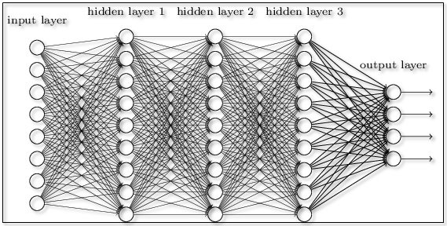
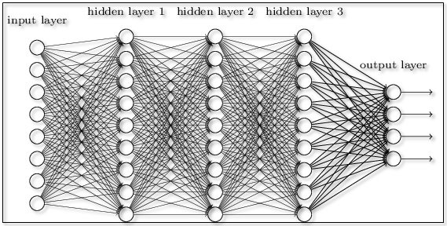
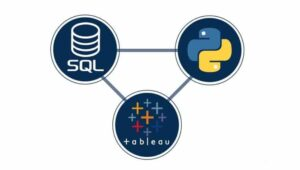

June, 2022
With the increasing push for more sustainable solutions to living, the electric vehicle market has been growing at a rapid rate throughout the past few years. OEM's are releasing new electric vehicle models every year leading to a wider variety of options available to customers. Furthermore, the shift towards electrification may have left manufacturers with a difficult decision with regards to sell price of new models, especially with the incorporation of new technology such as batteries, battery recharge methods and more powerful electric motors. This project aims to acquire specification data on electric vehicle models currently in the market, clean, store and analyse this data; moreover, a neural network machine learning model will be trained to predict the selling price. The idea behind this project was to create a tool whereby vehicle manufacturers can enter electric vehicle specification data of a new model to understand what price they may be able achieve. Furthermore, this type of insight may be able to help manufacturers with managing cost of tooling, costs of sourcing parts from global OES suppliers and other costs associated with mass production of new vehicle models.
Now with the context of the project set it is worth discussing the data science content. The majority of this project is written in the python programming language and aims to detail the entire data science process as shown below:
- Electric vehicle specification data is scraped from https://www.evspecifications.com/ using the selenium library in python. Furthermore, an api is used to collate data on exchange rates because the pricing data from the website is in multiple currencies and must be standardised. The api url: https://api.exchangerate.host/timeseries
- The data is cleaned using the pandas library in python. Lots of the data is inconsistent between models on the website, hence a large portion of this section is addressing missing data. If there is too much missing data in a given column then it is removed; however, the strategy employed when filling in missing data is to group the data and use mean values of the groups
- The cleaned data is then stored in a MySQL server database hosted on Amazon Web Services Relation Database platform (AWS RDS). This is to allow quick querying when moving forward with the project
- Data analysis is conducted on the dataset by looking at the pricing distribution; categorical variables vs price; continuous variables vs price and other visualisations such as a correlation heat map. A dashboard is created using Micrsoft Power BI to visualise insight on the dataset. The link to the dashboard can be found in the script or on the application web page
- The TensorFlow Python package is used to build a neural net machine learning model that is trained on the dataset to predict vehicle price. The dataset has to be pre-processed before being input to the model such as converting categorical variables to dummy variables
- Flask library in python is used to deploy the machine learning model in a web applicaton. A website is created so that the model can be embedded in the webpage along with the power bi dashboard. The HTML file can be found on my Github page.
- Lastly the model is deployed using AWS elastic bean stalk platform so that anyone online can use the model
 

A Deep Neural Network is implemented on a classification problem using TensforFlow Keras in Python. The dataset comes from LendingClub containing financial background information of customers and whether they paid back their loans or not. The aim of this project is to build a neural net that classifies whether or not people will pay back their loans. Exploratory data analysis is conducted on the dataset to identify which features carry the greatest influence, missing data and categorical variables are then addressed before constructing the model. Finally, the model is evaluated for its accuracy and is then tested using a single random individual in the dataset.

Creating linear and polynomial regression models to use various housing features to predict house price. The data is cleaned and preprocessed before assessing correlation between all variables. Various models are created and compared against one another. Furthermore, splitting the data into training and testing datasets is also looked at.
In this project multiple machine learning algorithms are implemented on numerous datasets using python programming langauge. The algorithms covered include: K Nearest Neighbours, Decision Trees & Random Forests, Support Vector Machines, K Means Clustering and finally Natural Language Processing. This project serves more as learning documentation for reference when applying machine learning algorithms to real world data; hence each proejct is a brief summarisation. Other algorithms such as logistic regression, linear regression and neural nets are not addressed in this document because they are included in other projects in the portfolio.
In this project a dataset is used containing information on absent employees in the workplace. The dataset is cleaned and preprocessed before a logistic regression model is made in Python. The next step involved utilising classes in Python to create a module so the logistic regression could be applied to new datasets. The module is used on a new dataset and loaded into MySQL by running queries in Jupyter Notebook. The findings are visualized in Tableau.
In this project a dataset is used containing information on absent employees in the workplace. The dataset is cleaned and preprocessed before a logistic regression model is made in Python. The next step involved utilising classes in Python to create a module so the logistic regression could be applied to new datasets. The module is used on a new dataset and loaded into MySQL by running queries in Jupyter Notebook. The findings are visualized in Tableau.

In this project a dataset is used containing information on absent employees in the workplace. The dataset is cleaned and preprocessed before a logistic regression model is made in Python. The next step involved utilising classes in Python to create a module so the logistic regression could be applied to new datasets. The module is used on a new dataset and loaded into MySQL by running queries in Jupyter Notebook. The findings are visualized in Tableau.
The construction and implementation of an Artifical Neural Network for a regression problem is covered in this project. The dataset used comes from IBM and contains vehicle specification details and prices they were sold at. Exploratory data analysis is carried out to assess which variables are significant before moving onto preprocessing the data and addressing categorical string features. Finally, the model attempts to predict car price based on given vehicle specification

The dataset used is technology product sales across the USA. The data cleaning is conducted before any other processes take place. Data wrangling is done to split address columns, combine columns and create new columns to allow easier analysis. Descriptive analysis is then completed on the data asking 5 main questions to provide insight for the business.

Data cleaning is done on housing data. Various techniques are used in the scipt inlcuding: JOINS; Substring to split address columns; altering and updating tables; case statements and using parsename to split columns.

In this project SQL is used to conduct exploratory data analysis on global covid 19 data. Aggregate functions are used to summarise infection, death and vaccination insights by country and continent. Other SQL functions are used such as sub-queries and JOINS. Lastly, a number of views are created to allow visualization of data in Tableau.

Here visualizations are produced in Tableau from the views created in the 'Covid 19 Data Exploration in SQL' project also found on this page. Multiple dashboards have been created to display infection, death and vaccination data broken down by both country and continent.